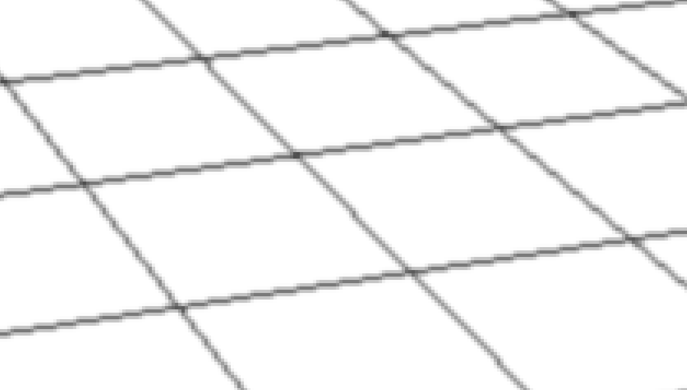

marci solti here. thanks for considering me as a candidate for the rendering team!
who would've thought that drawing antialiased lines is such a fun thing to do? it was a very educative exercise, and it definitely made me move out of my comfort zone. i really enjoyed figuring this stuff out, and i learnt a lot of new things.
in this little html file,
- i'll first present YOU the core ideas of the application,
- then list the solutions i ruled out
- before settling on the final line drawing algorithm;
- then i'll elaborate on the alpha blending options of this specific problem.
- at last, i will give you a very brief guide about my implementation
core ideas:
- vertex buffer:
- line list positions at xyz
- desired line thickness at w
- mvp transformation in vertex shader.
- geometry shader:
- quad on each line, with constant width and desired thickness in screen space
- 'distance field' in uv
- pixel shader:
- sampling exponential distribution according to uv for antialiased line rasterization
- basic exponential fog according to camera position
- tricks for proper alpha blending:
- add ± a very little number to y + add this number to the mvp transformed z again to solve depth issues
- 'tricky' line ordering
all of this are implemented in the uwp+dx11 sample. i tried to keep things simple, readable, correct and efficient; the draw call of my final implementation is around ~55-65µs which feels ok.
my testing rig was gtx 1060 3gb with i7 7700k at ~1080p.
overall i'm really pleased with the result. it was already worth it to apply to the position :)
the most important lessons for me are:
- DO NOT assume. MEASURE!
- engineering ingenuity and math always wins
over micro-optimizations;
- the geometry shader,
- alpha blending,
-
and anti-aliasing
are all very exciting topics and i should know more about them.
you can find my implementation's visual studio project at ../MyGrid/MyGrid.sln; first let me present you what's not in there.
other ideas i had:
textured quad
i've got this idea back when i first tried shapr at an apple store: the horizon kind of looks like this three.js example about anistropic filtering.
it has a very similar 'noisy pattern', so first i experimented with a textured quad with a grid texture i made in photoshop. here's the result:
not that bad if you ask me! also it was pretty educative to play with the sampler and alpha toggles. overall, it's
- relatively cheap;
- and it has pretty nice blending near the horizon.
- however, the quality near the camera is unacceptable, and it's not 2 & 4px width
- would be interesting to mix with my final solution
built-in line geometry
my next, not so educated guess was that it's just simply a rasterization of the 'linelist' primitive topology and some post process antialiasing. i implemented the grid drawing real quick
with an offscreen framebuffer to find out that this approach is not working at all:

it's because we smooth after rasterization - which creates a single pixel width line, either coloring the pixel or not - so some horizontal lines remain jaggy.
on the other hand, applying a gauss kernel is also super expensive: ~400 µs / pass, so it's separable property is not that big of a help for us.
you can set an 'antialiased line' toggle in the rasterizer, however line drawing alone this way takes a truly remarkable 4-5 ms == 4-5000 µs, so i ditched this option too.
thoughts i was having:
- the line drawing algorithms i found - e.g. bresenham's and wu's - feels pretty awkward to implement on the gpu; especially for this many lines.
- it cannot be quads in the vertex buffer, as it would be really weird to make them constant width.
- as i did not have that many experiece with the geometry shader, it felt strange to draw quads on the lines every frame,
- mostly because even if i do that, how do i make them smooth like in shapr3d? any kind of multisampling is so damn expensive; there must be a better way...
figuring out
the line drawing routine
my initial geometry shader implementation was pretty encouraging:
the constant line thickness wasn't implemented yet, and i also needed a cheap antialiasing solution.
in the meantime, i've got my hands on a windows beta. looking at your implementation closer was pretty enlightening.

ah-ha! it pretty much looks like what you would get if you would sweep a gaussian distribution through the lines. very interesting!
i was also getting through this amazing gpu gems article, fast prefiltered lines. it looked really promising, but i couldn't figure out instantly how i could use this idea.
this is the important picture from the paper:
the maximum intensity is when the sample is at the center of the line, and we reach 0 when the kernel's radius gets outside the thick line's width.
how to implement this? while i was thinking about it, i was also googling rigorously, and found the following blog post. it ruined everything, because it was essentially the solution:
for the perspective corrected lines
- vertex shader mvp transformation of line topology,
- clip lines at the near plane
- and put quads on the lines doing some perspective correction trickery in x and y
this so far wasn't that big of a deal, i probably could've figured these out myself - ok, maybe not the near plane clipping :) - however, he also provided a pretty neat connection with the gpu gems article:
what i discribed at the last figure is the definition of a distance field! we just need to store the distance from the center at the vertices, and the hardware automatically interpolates for us according to the pixel location; then all that's left is to sample our kernel of choice.
this article uses a cone kernel - exp2(-2.7*x*x) - which i found satisfactory. would be interesting to try other solution like in the original gpu gems paper. he also uses the noperspective specifier, what i also adopted.
my contribution to this code was putting the line thickness in the fourth component of the vertex buffer positions, to be able to draw the thick and the skinny lines in a single draw call. it's aint that much, but it's definitely something :)
at this point i thought i was done, however, i was about at half way :) alpha blending turned out to be pretty challenging too.
solving the
blending issues
being a bit more specific, this is the point where i was:
super pretty lines up close, very weird issues in the back. it took me a lot of time to figure out that it's a classic overdraw issue, and this blending order problem - also in general - is very-not-trivial.
so i found out i have to draw stuff from front to back. with a static camera from the specification, it's not that big of a deal, i just did this at first:
plus added a little displacement - let's call it bias - to the vertices to not to be at 0, but at a very small number.
this works, but when you start rotating the scene, the lines which were in the back are going to get to the front. this is a big problem; however, i managed to find a solution which works almost all the time while having zero effect on the run-time performance.
line drawing order trick
first i was trying to do some flipping of the model matrix according to the rotation angle, but it didn't work. i observed though that the overdraw happens near the horizon, not close to the camera. this sparked the idea that i should do the drawing the following way:
so we're always drawing from the edges inwards up to the center, because we're using perspective projection, and overdraw happens in the distance, not up close.
i was pretty proud that i figured this one out :)
however, it doesn't work all the time :( if you get super close to the ground and look at the horizon, the statement that no overdraw happens on the half of the plane that's closer to the camera doesn't stand:
and also if you draw a very dense grid, you get similar artifact:
however, the extremes you can push this method is pretty satisfactory in my opinion:
next i'm going to present you a litte hack - a good kind of hack - which is necessary because of another hack - was also an ok hack imo. you can actually see the result on the last picture.
depth hack
the last picture without this hack looked like this:
pretty bad. as we get closer and closer to the ground, the little 'bias' we added to both set of lines, to be at -bias and bias instead of 0 is not enough to trick the depth test. we can increase the bias, but then we get into this situation:
sure, the fog effect can solve this, but i the prefer the following solution:
the bias gets into the vertex shader as position y, i transfrom the position then substract the bias from it, that is
output.pos.z += -2.f*input.y;
adding this line to the vertex shader eliminates the artifact:
wow! that was quite a ride! overall i'm pleased with the results, however, it bugs me that the effect breaks down very close to the ground :( i'm sure i could hack it, but i didn't come up with a unified solution... yet :)
finishing up,
implementation details
adding the fog
finally something a didn't overthink :) i went with a simple exponential fog in the pixel shader. i could've done it in the geometry shader, but i didn't see any difference when i profiled it, and it also would've been linear interpolation.
about the project
i started from the uwp+dx11 template, what i didn't even know it existed.
there was a lot of new interesting things in it - i'll definitely adopt stuff in my home engine - starting with uwp of course (i was a winapi+dx12 dude) but xmath library, ppl tasks, and also dx11 with its immediate mode was pretty nice thing to explore.
i wanted the simplest implementation possible, so i ended up coding the whole thing in a single class, what you can find in ../MyGrid/Content/GridRenderer.h and GridRenderer.cpp; you can find *.hlsl files in this folder as well.
i think what needs to be explained is already pretty verbosely documented here. the code i think is pretty straightforward, there isn't that much added value to the sample code, so i omitted the comments like "Creating vertex buffer.", "Drawing grind.", etc...
i find the grid geometry creation a bit awkward but it's some pretty random logic so i didn't want to spend too much time optimizing it. i wanted to make it a constexpr function to be compile-time evaluated, but i just couldn't figure it out a clean way to do it, so i left it as it is. it's around ~10-20µs, which doesn't feel much, but isn't this the spirit why photoshop takes forever to open?
thank YOU for going through this!
you can go back to the to by clicking here.
{kind=link}
{kind=link}
{kind=link}
{kind=link}
{kind=link}
{kind=link}
{kind=link}
{kind=link}
{kind=link}
{kind=link}
{kind=link}
{kind=link}
{kind=link}
{kind=link}
{kind=link}
{kind=link}